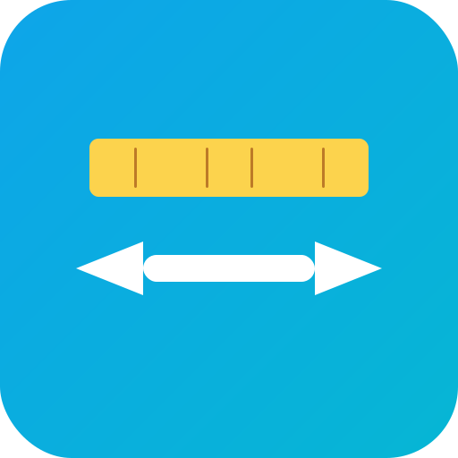

📐 V3案5のバリエーション比較
究極のシンプルデザインをベースにした配色・目盛りバリエーション
V3-5-1: オリジナル（ベース）
128px
32px
16px
配色
濃い青背景
黄色定規
白矢印
特徴
- 目盛り4本
- クラシックで落ち着いた配色
- プロフェッショナルな印象
V3-5-2: グラデーション背景
128px
32px
16px
配色
青グラデーション
黄色定規
白矢印
長所
- グラデーションで深みのある印象
- モダンな雰囲気
短所
- オリジナルより少し華やか
V3-5-3: オレンジの定規
128px
32px
16px
配色
濃い青背景
オレンジ定規
白矢印
長所
- 温かみのあるオレンジ
- 青とオレンジの補色対比
- 親しみやすい
V3-5-4: シアン背景

128px
32px
16px
配色
シアングラデーション
黄色定規
白矢印
長所
- 爽やかで明るい印象
- 現代的なデザイン
- 親しみやすい配色
V3-5-5: 紫グラデーション

128px
32px
16px
配色
紫グラデーション
オレンジ定規
白矢印
長所
- クリエイティブな印象
- 紫とオレンジの対比が美しい
- ユニークで記憶に残る
短所
- やや主張が強い
V3-5-6: 白い定規、黄色矢印
128px
32px
16px
配色
青背景
白定規
黄色矢印
長所
- 色の配置を逆転させた新鮮さ
- 黄色の矢印が非常に目立つ
- クリーンで明快
V3-5-7: 目盛り2本のみ
128px
32px
16px
配色
濃い青背景
黄色定規
白矢印
特徴
- 目盛り2本のみ（究極のミニマル）
- より太い目盛り線
長所
- 最もシンプル
- 16pxで最高のクリアさ
- ノイズが極限まで少ない
総合比較表
| バリエーション | 16px視認性 | 配色の落ち着き | モダン感 | ユニーク性 | 推奨度 |
|---|---|---|---|---|---|
| V3-5-1: オリジナル | ⭐⭐⭐⭐⭐ | ⭐⭐⭐⭐⭐ | ⭐⭐⭐⭐ | ⭐⭐⭐ | ⭐⭐⭐⭐⭐ |
| V3-5-2: グラデーション | ⭐⭐⭐⭐⭐ | ⭐⭐⭐⭐ | ⭐⭐⭐⭐⭐ | ⭐⭐⭐ | ⭐⭐⭐⭐ |
| V3-5-3: オレンジ定規 | ⭐⭐⭐⭐⭐ | ⭐⭐⭐⭐ | ⭐⭐⭐⭐ | ⭐⭐⭐ | ⭐⭐⭐⭐ |
| V3-5-4: シアン背景 | ⭐⭐⭐⭐⭐ | ⭐⭐⭐⭐ | ⭐⭐⭐⭐⭐ | ⭐⭐⭐⭐ | ⭐⭐⭐⭐⭐ |
| V3-5-5: 紫グラデーション | ⭐⭐⭐⭐⭐ | ⭐⭐⭐ | ⭐⭐⭐⭐⭐ | ⭐⭐⭐⭐⭐ | ⭐⭐⭐⭐ |
| V3-5-6: 白定規・黄矢印 | ⭐⭐⭐⭐⭐ | ⭐⭐⭐⭐⭐ | ⭐⭐⭐⭐ | ⭐⭐⭐⭐ | ⭐⭐⭐⭐⭐ |
| V3-5-7: 目盛り2本 | ⭐⭐⭐⭐⭐ | ⭐⭐⭐⭐⭐ | ⭐⭐⭐⭐ | ⭐⭐⭐ | ⭐⭐⭐⭐⭐ |
🏆 推奨トップ3
第1推奨: V3-5-1（オリジナル）またはV3-5-7（目盛り2本）
理由:
- 最もバランスが良く、プロフェッショナル
- 落ち着いた配色で長期的に使いやすい
- 16pxでの視認性が最高レベル
- V3-5-7はさらにミニマルで、小サイズに最適化
第2推奨: V3-5-4（シアン背景）
理由:
- 爽やかで親しみやすい
- 現代的でモダンな印象
- 黄色の定規が映える
- ユニーク性と視認性のバランスが良い
第3推奨: V3-5-6（白定規・黄矢印）
理由:
- 色配置の逆転で新鮮
- 黄色の矢印が非常に目立つ
- クリーンで明快
- 変換の意味が強調される